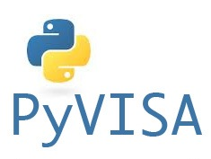

PyVISA: Control your instruments with Python¶
PyVISA is a Python package that enables you to control all kinds of measurement devices independently of the interface (e.g. GPIB, RS232, USB, Ethernet). As an example, reading self-identification from a Keithley Multimeter with GPIB number 12 is as easy as three lines of Python code:
>>> import pyvisa
>>> rm = pyvisa.ResourceManager()
>>> rm.list_resources()
('ASRL1::INSTR', 'ASRL2::INSTR', 'GPIB0::12::INSTR')
>>> inst = rm.open_resource('GPIB0::12::INSTR')
>>> print(inst.query("*IDN?"))
(That’s the whole program; really!) It works on Windows, Linux and Mac; with arbitrary adapters (e.g. National Instruments, Agilent, Tektronix, Stanford Research Systems).
General overview¶
The programming of measurement instruments can be real pain. There are many different protocols, sent over many different interfaces and bus systems (e.g. GPIB, RS232, USB, Ethernet). For every programming language you want to use, you have to find libraries that support both your device and its bus system.
In order to ease this unfortunate situation, the Virtual Instrument Software Architecture (VISA) specification was defined in the middle of the 90ies. VISA is a standard for configuring, programming, and troubleshooting instrumentation systems comprising GPIB, VXI, PXI, Serial, Ethernet, and/or USB interfaces.
Today VISA is implemented on all significant operating systems. A couple of vendors offer VISA libraries, partly with free download. These libraries work together with arbitrary peripherical devices, although they may be limited to certain interface devices, such as the vendor’s GPIB card.
The VISA specification has explicit bindings to Visual Basic, C, and G (LabVIEW’s graphical language). Python can be used to call functions from a VISA shared library (.dll, .so, .dylib) allowing to directly leverage the standard implementations. In addition, Python can be used to directly access most bus systems used by instruments which is why one can envision to implement the VISA standard directly in Python (see the PyVISA-Py project for more details). PyVISA is both a Python wrapper for VISA shared libraries but can also serve as a front-end for other VISA implementation such as PyVISA-Py.